Examples
Every snippet on this page has actually been run against the real
toolsrtm/scopeinpython packages – not hand-written pseudocode.
These mirror the R tutorial series (ToolsRTM,
SCOPEinR)
topic-for-topic where a Python port exists; see each package’s own
README.md for the full R-tutorial-to-Python-module bridge table,
including the gaps called out at the bottom of this page. New to what
Cab, LIDFa, Vcmax25, or any other trait/parameter below
actually means, its unit, or its realistic range? See the Parameter & Trait Glossary
first – this page assumes that vocabulary and focuses on running the
models.
The model landscape, in one line each: prospect_d()/
prospect_pro() (PROSPECT) simulate a single leaf’s
reflectance/transmittance from its pigments, water and dry matter;
foursail() (fourSAIL) turns that leaf optics into a
canopy-level BRDF given leaf area, leaf angle and viewing geometry;
inform() adds explicit forest-stand structure on top of
fourSAIL; spart_toa() (SPART) chains fourSAIL with a soil
model (BSM) and an atmosphere model (SMAC) to go all the way to
top-of-atmosphere; and scopeinpython.get_scope() (SCOPE) replaces
the “soil brightness + fixed leaf temperature” shortcuts the others take
with a real coupled energy balance and photosynthesis model, so it can
also predict leaf/soil temperature, carbon flux and solar-induced
fluorescence (SIF) – not just reflectance.
Leaf + canopy (toolsrtm)
Mirrors R Tutorials 01-02. prospect_d (PROSPECT-D) models a leaf as a
stack of absorbing/scattering plates – chlorophyll, carotenoids, water
and dry matter each leave their own signature in the resulting
reflectance/transmittance spectrum. foursail (fourSAIL, the classic
PROSAIL canopy model) then takes that leaf optics and a soil background
and turns them into canopy-level bidirectional reflectance (BRDF) via a
turbid-medium radiative-transfer solution – the canopy is treated as a
statistical cloud of leaves at a given area density (LAI) and angle
distribution, not explicit 3D geometry.
import numpy as np
from toolsrtm import prospect_d, foursail
leaf = prospect_d(N=1.5, Cab=40, Car=8, Anth=1, Cbrown=0, EWT=0.01, LMA=0.009, alpha=40)
print(leaf.lambda_[:3], leaf.refl[:3], leaf.tran[:3])
inputLUT = dict(
N=1.5, Cab=40, Car=8, Anth=1, Cbrown=0, EWT=0.01, LMA=0.009, alpha=40,
Prot=0.002, CBC=0.007, # only used if leaf_model='PROSPECT-PRO'
LIDFa=-0.35, LIDFb=-0.15, TypeLidf=1,
LAI=3, hspot=0.01, tts=30, tto=0, psi=0,
)
rsoil = np.full(2101, 0.15)
sail = foursail(inputLUT, rsoil, leaf_model="PROSPECT-D", spectrum_all=True)
print("TOC bidirectional reflectance factor (rsot) at 550 nm:", sail.rsot[550 - 400])
{kind=link}
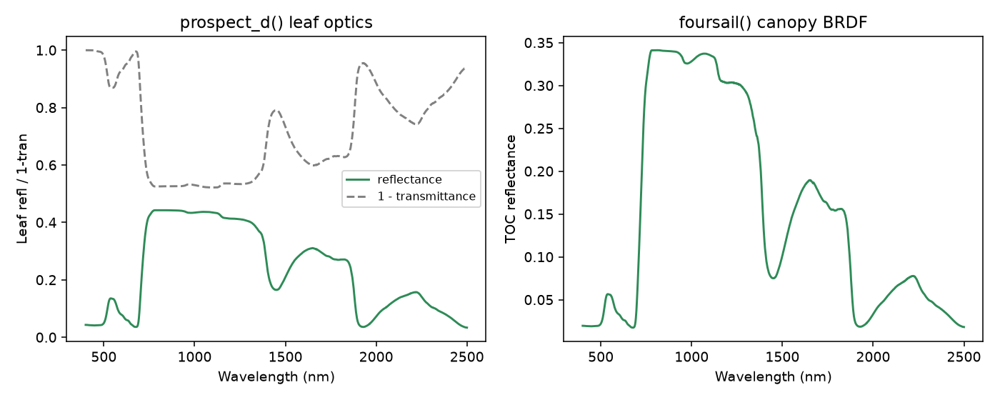
Real output of the code above: leaf-level optics (left) and the resulting canopy-level TOC reflectance (right).
Alternative leaf models: Liberty and Fluspect-B (toolsrtm)
prospect_d/prospect_pro aren’t the only leaf models – liberty
(conifer needles, Dawson et al. 1998) and fluspect_b (PROSPECT-D
optics plus the chlorophyll-fluorescence excitation-emission matrices SCOPE
needs) both work as drop-in leaf models for foursail/foursail2/
inform via their leaf_model="Liberty"/"Fluspect-B" argument
(Tutorial 02’s leaf-model comparison table).
from toolsrtm import liberty, fluspect_b
needle = liberty(cell_d=40, inter_c=0.045, baseline_abs=0.0006, leaf_thick=1.6,
albino_abs=0, Cab=40, EWT=0.01, lign_cell=2, Nitrogen=1)
print("Liberty reflectance at 800nm:", round(float(needle.refl[800 - 400]), 4))
flu = fluspect_b(Cab=40, Car=8, EWT=0.01, LMA=0.009, Cs=0, N=1.5, fqe=0.01, Cx=0)
print("Fluspect-B reflectance at 800nm:", round(float(flu.refl[800 - 400]), 4))
print("Backward fluorescence matrix shape (PSI):", flu.MbI.shape)

Real output: LIBERTY’s conifer-needle optics – flatter NIR plateau and different SWIR absorption shape than broadleaf PROSPECT, reflecting the needle-specific anatomy the model targets.

Real output: Fluspect-B’s leaf reflectance/transmittance (left, near-identical to PROSPECT-D since it shares the same absorption physics) and its backward chlorophyll-fluorescence excitation-emission matrix (right) – the two characteristic emission peaks near 685nm (PSII) and 740nm (PSI) are visible at both the blue (~440nm) and red (~660-680nm) chlorophyll excitation bands.
Soil (BSM) + optical canopy BRDF (scopeinpython)
Mirrors SCOPEinR Tutorials 01-02. get_bsm (BSM, Brightness-Shape-
Moisture) is SCOPE’s own soil reflectance model – three parameters
(brightness, two empirical shape terms) plus a wetting model, rather than
a flat assumed spectrum. run_rtmo is SCOPE’s optical top-of-canopy
BRDF solver – physically the same turbid-medium idea as foursail,
but re-implemented to plug into SCOPE’s own multi-layer energy-balance
loop (Section “Full SCOPE run” below) rather than standing alone.
import numpy as np
from toolsrtm import prospect_d
from toolsrtm.canopy import dladgen
from scopeinpython import SoilParams, WettingParams, get_bsm, CanopyStructure, get_spectra_scope, run_rtmo
spectral = get_spectra_scope()
rsoil = get_bsm(SoilParams(BSMBrightness=0.5, BSMlat=25, BSMlon=45),
WettingParams(SMp=15, SMC=25, film=0.015))
leaf = prospect_d(N=1.5, Cab=40, Car=8, Anth=1, Cbrown=0, EWT=0.01, LMA=0.009, alpha=40)
refl_leaf, tran_leaf = leaf.refl[:2001], leaf.tran[:2001]
lidf = dladgen(-0.35, -0.15).lidf
canopy = CanopyStructure(LAI=3, lidf=lidf, hot=0.1 / 2.0)
# Esun_/Esky_ must be supplied by the caller -- see python/README.md
result = run_rtmo(
spectral=spectral, leaf_refl=refl_leaf, leaf_tran=tran_leaf,
rho_thermal=0.01, tau_thermal=0.01, rsoil=rsoil, canopy=canopy,
tts=30, tto=0, psi=0, Esun_=Esun_, Esky_=Esky_,
)
print("TOC reflectance at 550 nm:", result.refl[550 - 400])
Sensor convolution + vegetation indices (toolsrtm)
Mirrors R Tutorials 07-09: convolve a simulated hyperspectral canopy spectrum onto real Sentinel-2A band spectral response functions, then compute vegetation indices from the convolved bands.
import numpy as np
from toolsrtm import prospect_d, foursail
from toolsrtm.srf import srf_sentinel2a, spectral_convolution_srf
from toolsrtm.indices import get_indices
inputLUT = dict(
N=1.5, Cab=40, Car=8, Anth=1, Cbrown=0, EWT=0.01, LMA=0.009, alpha=40,
LIDFa=-0.35, LIDFb=-0.15, TypeLidf=1,
LAI=3, hspot=0.01, tts=30, tto=0, psi=0,
)
rsoil = np.full(2101, 0.15)
sail = foursail(inputLUT, rsoil, leaf_model="PROSPECT-D", spectrum_all=True)
wave = np.arange(400, 2501)
s2a = srf_sentinel2a()
conv = spectral_convolution_srf(wave, sail.rsot, s2a)
print("Sentinel-2A bands:", s2a.band_names)
print("Convolved TOC reflectance:", np.round(conv.rfl, 4))
indices = get_indices(conv.wl, conv.rfl, spectral_domain="VNIR")
for name in ("NDVI", "MSAVI", "REP"):
print(name, "=", round(float(indices[name][0]), 4))
{kind=link}
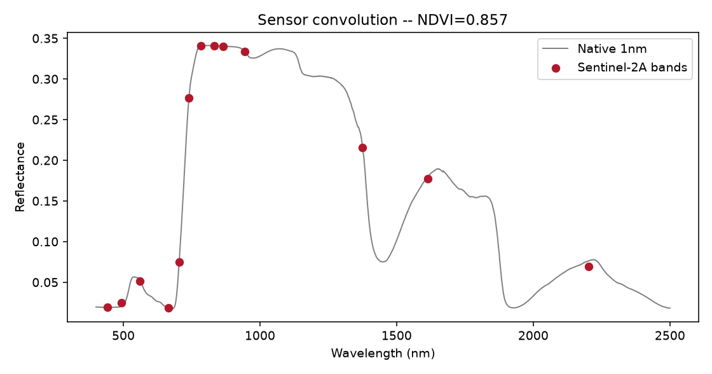
Real output: the native 1nm spectrum (grey) and the same spectrum convolved onto Sentinel-2A’s band spectral response functions (red points).
INFORM: explicit forest-canopy model (toolsrtm)
inform (Atzberger, forest-stand extension of fourSAIL) adds explicit
tree-crown geometry – stem density, crown diameter, tree height,
understorey LAI – on top of the same leaf models. Mirrors R Tutorial 02’s
foursail/foursail2/inform comparison.
import numpy as np
from toolsrtm import foursail, inform
inputLUT = dict(
N=1.5, Cab=40, Car=8, Anth=1, Cbrown=0, EWT=0.01, LMA=0.009, alpha=40,
Prot=0.002, CBC=0.007, LIDFa=-0.35, LIDFb=-0.15, TypeLidf=1,
LAI=3, hspot=0.01, tts=30, tto=0, psi=0,
LAIu=0.5, sd=650, cd=4.5, h=20, skyl=0.1, # INFORM-only: understorey LAI, stem density, crown diameter, tree height, diffuse-light fraction
)
rsoil = np.full(2101, 0.15)
r_forest = inform(inputLUT, rsoil, leaf_model="PROSPECT-D")
r_homogeneous = foursail(inputLUT, rsoil, leaf_model="PROSPECT-D", spectrum_all=True).rsot
print("fourSAIL (homogeneous) at 800nm:", round(float(r_homogeneous[800 - 400]), 4))
print("INFORM (forest stand) at 800nm:", round(float(r_forest[800 - 400]), 4))
{kind=link}
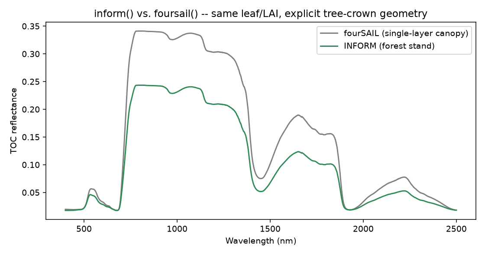
Real output: same leaf optics and LAI through both models – INFORM’s explicit crown/gap geometry produces lower reflectance than a homogeneous fourSAIL canopy, matching the expected physics of a discontinuous forest stand.
Machine-learning trait inversion (toolsrtm)
Mirrors R Tutorials 11-12: build a small LUT, extract Sentinel-2-like
bands, and invert Cab with a PLSR model (get_inversion dispatches to
12 algorithms in total – see toolsrtm.inversion.ALGORITHMS).
import numpy as np
import pandas as pd
from toolsrtm import prospect_d, foursail
from toolsrtm.inversion import get_inversion
rng = np.random.default_rng(1)
rows = []
for _ in range(200):
Cab, LAI = rng.uniform(10, 80), rng.uniform(0.5, 6)
inputLUT = dict(
N=1.5, Cab=Cab, Car=8, Anth=1, Cbrown=0, EWT=0.01, LMA=0.009, alpha=40,
LIDFa=-0.35, LIDFb=-0.15, TypeLidf=1,
LAI=LAI, hspot=0.01, tts=30, tto=0, psi=0,
)
sail = foursail(inputLUT, np.full(2101, 0.15), leaf_model="PROSPECT-D", spectrum_all=True)
row = {"Cab": Cab, "LAI": LAI}
for wl in (490, 560, 665, 705, 740, 783, 842, 865, 1610, 2190):
row[f"R{wl}"] = sail.rsot[wl - 400]
rows.append(row)
df = pd.DataFrame(rows)
band_cols = [c for c in df.columns if c.startswith("R")]
result = get_inversion(df, dep_var="Cab", inputs=band_cols, algorithm="PLSR", n_samples=200, seed=1)
print("Test R2:", round(result.statistics["test"]["r2"], 3))
print("Test RMSE:", round(result.statistics["test"]["rmse"], 3))
{kind=link}
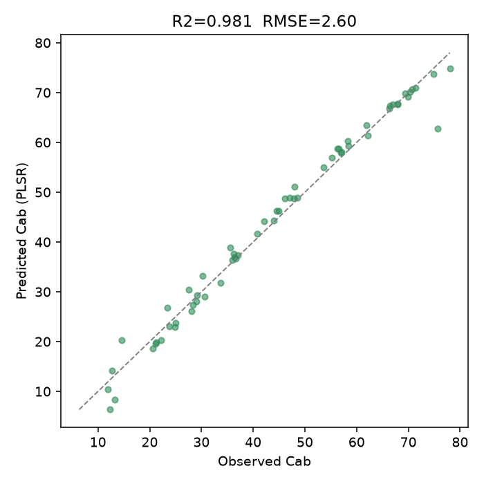
Real output: predicted vs. observed Cab on the held-out test set (R2=0.981).
SPART: full soil-plant-atmosphere chain (toolsrtm)
Mirrors R Tutorial 03: spart_toa chains foursail with the BSM soil
model and SMAC atmospheric correction, returning both top-of-canopy and
top-of-atmosphere reflectance already resampled to a real sensor’s bands
(Sentinel-2A here) – there’s no separate “simulate native, then convolve”
step, unlike plain foursail.
from toolsrtm import spart_toa, sentinel2a_msi
inputLUT = dict(
N=1.5, Cab=40, Car=8, Anth=1, Cbrown=0, EWT=0.01, LMA=0.009, alpha=40,
Prot=0.002, CBC=0.007, LIDFa=-0.35, LIDFb=-0.15, TypeLidf=1,
LAI=3, hspot=0.01, tts=30, tto=0, psi=0,
Pa=1000, aot550=0.3246, uo3=0.3480, uh2o=1.4116, # atmosphere: pressure, aerosol optical thickness, ozone, water vapour
)
result = spart_toa(inputLUT, sensor=sentinel2a_msi(), leaf_model="PROSPECT-PRO",
BSMBrightness=0.5, BSMlat=25, BSMlon=45, SMp=15)
print("Sentinel-2A band centers (nm):", result.wl_smac)
print("TOC (canopy BRDF):", result.rfl_toc_brdf.round(4))
print("TOA (after SMAC atmospheric correction):", result.rfl_toa.round(4))
{kind=link}
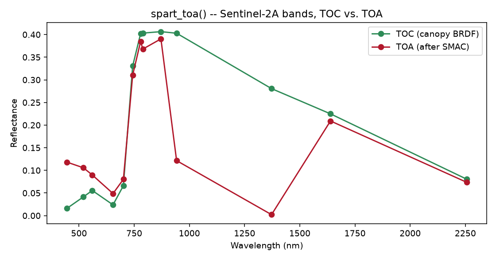
Real output: TOC and TOA reflectance diverge sharply in the water-vapour bands (~940/1370nm), where the atmosphere absorbs most of the signal before it reaches the sensor – exactly what real atmospheric correction has to undo.
Deep-learning trait inversion (toolsrtm, optional dl extra)
Mirrors R Tutorial 13: a Keras dense network (matching R’s own
getMLmodel/getMLmodel.withRetrain layer sizes, dropout placement,
and 7-optimizer choice) trained to invert Cab from the same 10
Sentinel-2-like bands used in the PLSR example above. Needs
pip install "toolsrtm[dl]" (TensorFlow); nothing else in the package
requires it. Adam at R’s own conservative default learning rate (1e-4)
converges slowly, so this needs a generous epoch budget and several
random restarts (n_times) to land a good held-out fit – the same
trade-off the test suite itself budgets for.
import numpy as np
import pandas as pd
from toolsrtm import foursail
from toolsrtm.deep_learning import get_ml_model
rng = np.random.default_rng(2)
rows = []
for _ in range(600):
Cab, LAI = rng.uniform(10, 80), rng.uniform(0.5, 6)
inputLUT = dict(
N=1.5, Cab=Cab, Car=8, Anth=1, Cbrown=0, EWT=0.01, LMA=0.009, alpha=40,
LIDFa=-0.35, LIDFb=-0.15, TypeLidf=1,
LAI=LAI, hspot=0.01, tts=30, tto=0, psi=0,
)
sail = foursail(inputLUT, np.full(2101, 0.15), leaf_model="PROSPECT-D", spectrum_all=True)
row = {"Cab": Cab, "LAI": LAI}
for wl in (490, 560, 665, 705, 740, 783, 842, 865, 1610, 2190):
row[f"R{wl}"] = sail.rsot[wl - 400]
rows.append(row)
df = pd.DataFrame(rows)
band_cols = [c for c in df.columns if c.startswith("R")]
result = get_ml_model(df, dep_var="Cab", model="Hidden-layers",
n_epochs=500, n_times=3, seed=2)
print("Held-out R2:", round(result.stats["r2"], 3))
print("Held-out RMSE:", round(result.stats["rmse"], 2))
{kind=link}
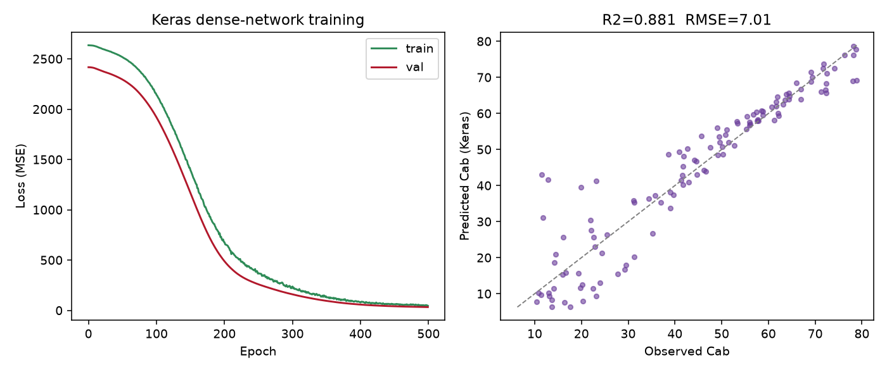
Real output: training/validation loss over 500 epochs (left) and predicted vs. observed Cab on the held-out split (right, R2=0.900, RMSE=6.42 ug/cm2).
The 1D-CNN, on hyperspectral bands (toolsrtm)
get_ml_model()’s other architecture: model="CNN", a 1D
convolution over the predictor vector in spectral order (matching R
Tutorial 13’s own PRISMA demo) instead of treating each band as an
independent input. A wider, more contiguous band set gives the
convolution real local spectral structure to exploit – here, ~195
bands spanning 450-2390nm every 10nm, a PRISMA-like hyperspectral
setup:
import numpy as np
import pandas as pd
from toolsrtm import foursail
from toolsrtm.deep_learning import get_ml_model
rng = np.random.default_rng(3)
hyp_wl = list(range(450, 2400, 10)) # ~195 contiguous bands
rows = []
for _ in range(800):
Cab, LAI = rng.uniform(10, 80), rng.uniform(0.5, 6)
inputLUT = dict(
N=1.5, Cab=Cab, Car=8, Anth=1, Cbrown=0, EWT=0.01, LMA=0.009, alpha=40,
LIDFa=-0.35, LIDFb=-0.15, TypeLidf=1,
LAI=LAI, hspot=0.01, tts=30, tto=0, psi=0,
)
sail = foursail(inputLUT, np.full(2101, 0.15), leaf_model="PROSPECT-D", spectrum_all=True)
row = {"Cab": Cab}
for wl in hyp_wl:
row[f"R{wl}"] = sail.rsot[wl - 400]
rows.append(row)
df = pd.DataFrame(rows)
result = get_ml_model(df, dep_var="Cab", model="CNN",
n_epochs=500, n_times=3, seed=3)
print("Held-out R2:", round(result.stats["r2"], 3))
print("Held-out RMSE:", round(result.stats["rmse"], 2))
{kind=link}
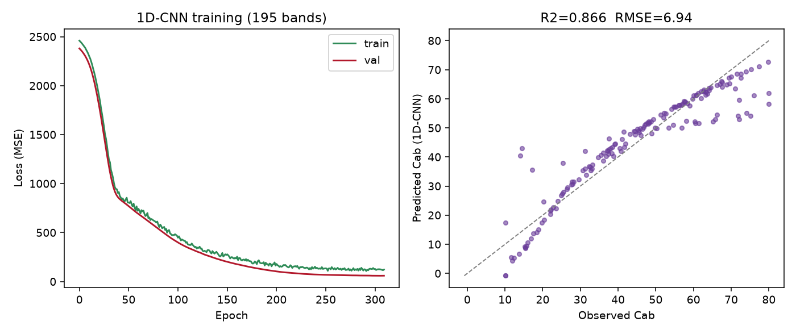
Real output: training/validation loss over ~195 bands (left) and predicted vs. observed Cab on the held-out split (right, R2=0.866, RMSE=6.94 ug/cm2).
Both architectures apply x_scaler internally and consistently between
training and prediction (result.x_scaler, an sklearn
StandardScaler, is returned for reuse on genuinely new data) –
the R side of this same page (Tutorial 13) documents, as a real bug
found and fixed, what happens when a caller forgets to do that by hand.
MARMIT soil moisture model (toolsrtm)
Mirrors R Tutorial 16. Where BSM (above) builds a soil spectrum from brightness/shape parameters, MARMIT (Bablet et al. 2018) goes the other way: it starts from a real dry reference spectrum and adds a physically modelled liquid-water film on top, so the same soil can be simulated at any moisture level. The example below builds a wetted soil spectrum from a dry reference and couples it into a canopy simulation.
from toolsrtm.marmit import get_marmit_rsoil
from toolsrtm import prospect_d, foursail
soil = get_marmit_rsoil(soil_id=3, L=0.05, eps=0.4, version="marmit1")
print("SMC (soil moisture content):", round(float(soil.smc), 4))
for wl in (550, 850, 1600):
i = wl - 400
print(f"{wl}nm: dry={soil.rsoil_dry[i]:.4f} wet={soil.rsoil_wet[i]:.4f}")
inputLUT = dict(
N=1.5, Cab=40, Car=8, Anth=1, Cbrown=0, EWT=0.01, LMA=0.009, alpha=40,
LIDFa=-0.35, LIDFb=-0.15, TypeLidf=1,
LAI=1.5, hspot=0.01, tts=30, tto=0, psi=0,
)
sail = foursail(inputLUT, soil.rsoil_wet, leaf_model="PROSPECT-D", spectrum_all=True)
print("Canopy TOC reflectance at 850nm with wet MARMIT soil:", round(float(sail.rsot[850 - 400]), 4))
{kind=link}
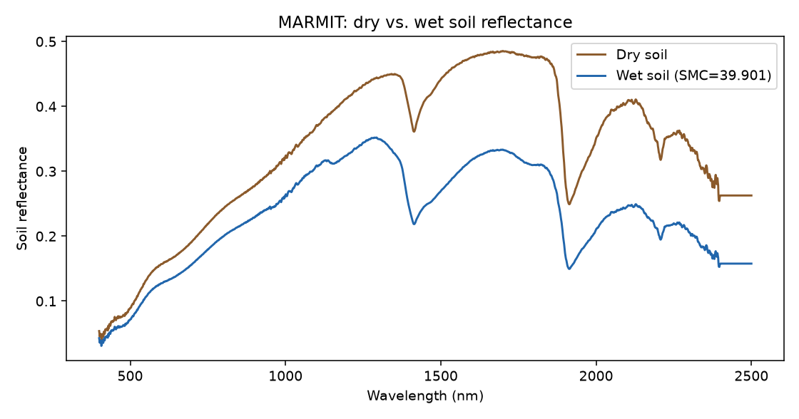
Real output: MARMIT’s dry-reference vs. wetted soil reflectance – the SWIR water-absorption dips (~1400/1900nm) deepen and overall brightness drops as the soil wets.
Full SCOPE run: energy balance + fluorescence (scopeinpython)
Mirrors SCOPEinR Tutorials 03-04. SCOPE (Soil Canopy Observation,
Photochemistry and Energy fluxes, van der Tol et al. 2009) is a different
kind of model from PROSAIL/SPART above, not just a bigger one: instead of
assuming leaf/soil temperature and computing reflectance alone, it
iteratively solves leaf and soil temperature so that absorbed
radiation balances sensible + latent heat + photosynthesis (the energy
balance), then derives fluorescence and carbon flux from that solved
state – one full get_scope() call chains optics
(get_fluspect_cx_scope() + run_rtmo), the energy
balance (ebal()), photosynthesis
(get_biochemical()) and fluorescence
(rtmf()) together, against the same bundled example
LUT row SCOPEinR’s own test suite and R vignettes use
(SCOPEinR/inst/input/LUT_input.csv).
import csv
from pathlib import Path
from scopeinpython import ScopeOptions, get_scope
with open("SCOPEinR/inst/input/LUT_input.csv", newline="") as f:
row = next(csv.DictReader(f))
res = get_scope(row, options=ScopeOptions(k_maxit=100, maxEBer=1.0))
print("Canopy layers:", res.nlayers)
print("TOC reflectance at 550/700/850 nm:",
round(float(res.rtmo.refl[550 - 400]), 4),
round(float(res.rtmo.refl[700 - 400]), 4),
round(float(res.rtmo.refl[850 - 400]), 4))
print("Net radiation, total (Rntot):", round(float(res.ebal.Rntot), 2), "W/m2")
print("Total photosynthesis (Actot):", round(float(res.ebal.Actot), 2), "umol CO2/m2/s")
if res.rtmf is not None:
print("Emitted fluorescence (EoutF):", round(float(res.rtmf.EoutF), 4), "W/m2/sr")
{kind=link}
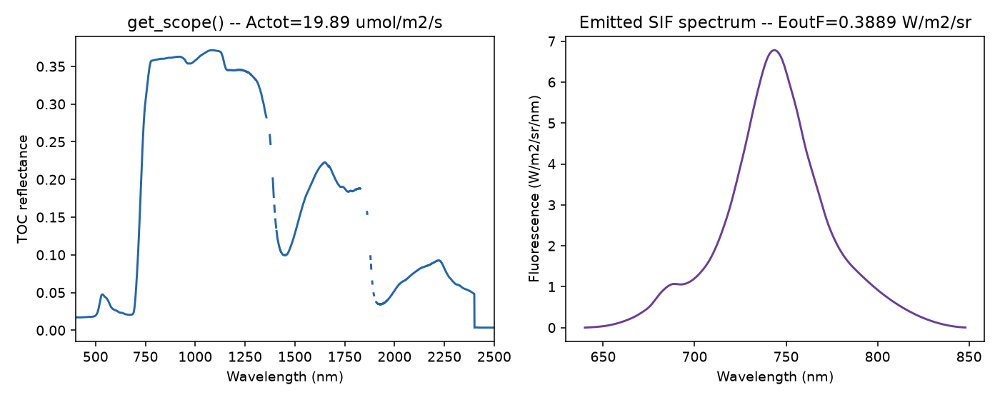
Real output of the single get_scope() call above: TOC reflectance (left; the dashed gaps are the water-vapor-absorption wavelengths SCOPE itself leaves undefined) and the emitted SIF spectrum (right).
Real Sentinel-2 capstone: retrieving net photosynthesis (scopeinpython)
Mirrors SCOPEinR Tutorial 11, end to end. Sentinel-2 cannot observe
SIF – no bands resolve the fluorescence peaks or O2-A/O2-B features
dedicated SIF missions (FLEX, TROPOMI) do – so any model trained with
SIF as a predictor is not valid to apply to real Sentinel-2 data. This
example trains both a reflectance-only model (Sentinel-2-realistic) and a
reflectance+SIF model (idealized) explicitly, so the real accuracy cost of
not having SIF is visible, then applies only the reflectance-only
model to a real Sentinel-2 time series over Speulderbos, NL (a mixed
pine/beech ICOS forest). Needs the optional ml and stac extras.
The training LUT must vary every trait get_scope() reads (meteorology,
structure, soil – not just the two traits being retrieved), matching
SCOPEinR::getLUT.SCOPE()’s own per-trait sampling from
inputs_SCOPE.csv, or the fitted model generalizes poorly to real data:
import csv
import numpy as np
import pandas as pd
from scopeinpython import ScopeOptions, get_scope
from toolsrtm.sensitivity import get_cor, gauss_by_min_max
from toolsrtm.srf import srf_sentinel2a, spectral_convolution_srf
from toolsrtm.satellite import get_satellite_collection, get_sentinel2_cube
from sklearn.ensemble import RandomForestRegressor
# 1. A properly-varied SCOPE LUT: every trait in inputs_SCOPE.csv sampled
# per its own Distribution (Uniform/Fixed/Gaussian), Cab and Vcmax25
# then overwritten with a correlated pair (leaves' real Cab-Vcmax25
# co-variation) via toolsrtm.sensitivity.get_cor -- SCOPEinR
# Tutorial 10's "fair test" fix, ported here too.
def build_scope_lut(csv_path, n, seed):
rng = np.random.default_rng(seed)
with open(csv_path, newline="", encoding="utf-8-sig") as f:
rows = list(csv.DictReader(f))
lut = {}
for row in rows:
trait, dist = row["variable"], row["Distribution"]
if trait in ("startDate", "endDate"):
continue
if trait == "Type":
lut[trait] = np.array([f"C{row['default']}"] * n, dtype=object); continue
lo, hi = float(row["lower"]), float(row["upper"])
if dist == "Uniform":
lut[trait] = rng.uniform(lo, hi, size=n)
elif dist == "Fixed":
lut[trait] = np.full(n, float(row["default"]))
else:
lut[trait] = gauss_by_min_max(n, float(row["Mean_D"]), float(row["Std_D"]), lo, hi, n * 3, rng=rng)
return lut
n_samples = 250
lut = build_scope_lut("SCOPEinR/inst/input/inputs_SCOPE.csv", n_samples, seed=1)
cor_res = get_cor(n_inputs=2, n_lut=n_samples, distribution="Uniform", rho=0.85, seed=3,
var_names=["Cab", "Vcmax25"], min_range=[5, 5], max_range=[90, 250])
lut["Cab"], lut["Vcmax25"] = cor_res.lut["Cab"], cor_res.lut["Vcmax25"]
# 2. Run SCOPE for every row; collect Actot (the flux) and Sentinel-2 band reflectance.
opts = ScopeOptions(k_maxit=100, maxEBer=1.0)
wl_optical = np.arange(400, 2401)
s2a = srf_sentinel2a()
real_names = ["B02", "B03", "B04", "B05", "B06", "B07", "B08", "B8A", "B11", "B12"]
keep = ["B2", "B3", "B4", "B5", "B6", "B7", "B8", "B8A", "B11", "B12"]
Actot, band_refl = [], []
for i in range(n_samples):
row = {k: v[i] for k, v in lut.items()}
res = get_scope(row, options=opts)
refl = np.asarray(res.rtmo.refl)[: len(wl_optical)]
bad = ~np.isfinite(refl)
if bad.any():
refl[bad] = np.interp(wl_optical[bad], wl_optical[~bad], refl[~bad])
conv = spectral_convolution_srf(wl_optical, refl, s2a)
keep_idx = [conv.band_names.index(k) for k in keep]
Actot.append(res.ebal.Actot); band_refl.append(conv.rfl[keep_idx])
Actot, band_refl = np.array(Actot), np.array(band_refl)
# 3. Train the reflectance-only model (the only one applied to real data below).
df = pd.DataFrame(band_refl, columns=real_names)
rf_reflonly = RandomForestRegressor(n_estimators=300, random_state=1)
rf_reflonly.fit(df[real_names], Actot)
# 4. A real Sentinel-2 time series over Speulderbos, 2024.
lat, lon, d = 52.2500, 5.6900, 0.003
bbox = (lon - d, lat - d, lon + d, lat + d)
windows = [("2024-03-01", "2024-03-31"), ("2024-05-01", "2024-05-31"),
("2024-07-01", "2024-07-31"), ("2024-09-01", "2024-09-30"), ("2024-11-01", "2024-11-30")]
ts, cubes = [], {}
for w in windows:
coll = get_satellite_collection(bbox, collection="sentinel-2-l2a", date_range=w,
cloud_server="microsoft", n_limit=20, cloud_threshold=40)
ds = get_sentinel2_cube(coll, bbox, resolution=10.0, crs="EPSG:32631", aggregation_method="mean")
cubes[w[0]] = ds
means = np.array([float(np.nanmean(ds[b].values)) / 10000 for b in real_names])
ndvi = (means[6] - means[2]) / (means[6] + means[2]) # B08, B04
actot_pred = float(rf_reflonly.predict(means.reshape(1, -1))[0])
ts.append(dict(date=w[0], ndvi=ndvi, actot=actot_pred))
ts_df = pd.DataFrame(ts)
print("Correlation, NDVI vs. retrieved Actot:", round(float(np.corrcoef(ts_df.ndvi, ts_df.actot)[0, 1]), 2))
# 5. Map Actot spatially over the July scene (every pixel through the same model).
map_cube = cubes["2024-07-01"]
r = {b: map_cube[b].values.astype(float) / 10000 for b in real_names}
pix = np.column_stack([r[b].ravel() for b in real_names])
ok = np.all(np.isfinite(pix), axis=1)
actot_pixels = np.full(pix.shape[0], np.nan)
actot_pixels[ok] = rf_reflonly.predict(pix[ok])
actot_map = actot_pixels.reshape(r["B04"].shape)
{kind=link}
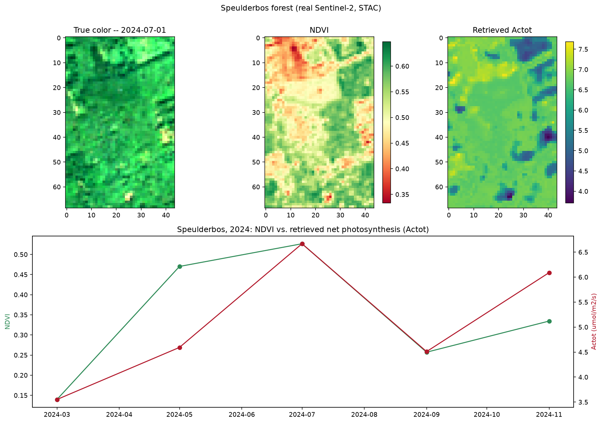
Real output over the real Speulderbos scene (July 2024): true color, NDVI, and per-pixel retrieved Actot (top), and the resulting NDVI/Actot seasonal curve across all 5 real 2024 STAC acquisitions (bottom) – both rise into summer and decline toward autumn, the same real forest phenology ToolsRTM’s own Tutorials 15-17 found in NDVI at nearby real sites.
Global sensitivity analysis (toolsrtm)
Mirrors R Tutorial 10: run foursail hundreds of times while varying leaf
and canopy traits, then compute the Johnson relative-importance index at
every wavelength – how much each trait relatively explains reflectance
variance there. Produces the classic PROSAIL “stacked contribution vs
wavelength” figure (leaf structure, pigment, water, dry matter, leaf angle,
LAI, soil, stacked to 100% at every wavelength).
from toolsrtm.sensitivity import spectral_sensitivity
result = spectral_sensitivity(n_samples=500, distribution="Uniform",
traits=("N", "Cab", "EWT", "LMA", "LIDFa", "LAI"),
wl_step=5, seed=11)
# long-format arrays: wavelength, trait, sti_pct (sums to 100 per wavelength)
at_700nm = result.sti_pct[result.wavelength == 700]
print(dict(zip(result.trait[result.wavelength == 700], at_700nm.round(1))))
{kind=link}
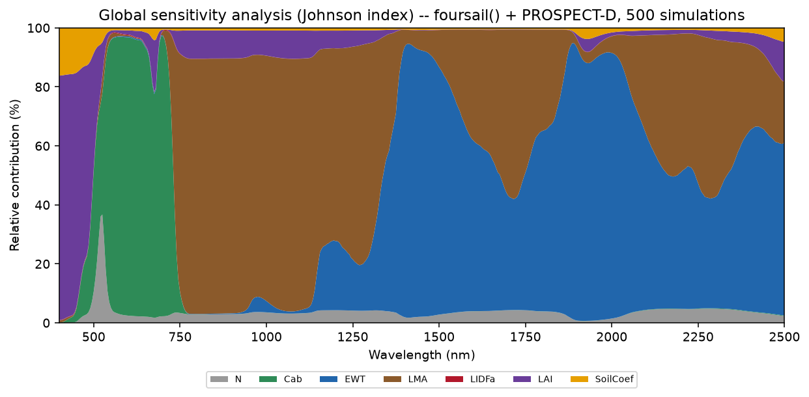
Real output: chlorophyll (Cab) dominates the visible, water (EWT) and dry matter (LMA) dominate the SWIR, leaf structure (N) and soil brightness matter most in the NIR plateau – the textbook PROSAIL sensitivity pattern, recovered numerically rather than assumed.
toolsrtm.sensitivity also has sobol_indices()
(direct data -> Johnson-index + simplified Sobol-like Si/STi, no extra model
runs needed) and the correlated/multi-distribution LUT builders
get_distribution_lut() /
get_cor() / correlated_value()
(R Tutorial 05’s LUT-correlation helpers) – see tests/test_sensitivity.py
for worked examples of each.
Real Sentinel-2 capstone: data-driven spatial index + Cab mapping (toolsrtm)
Mirrors R Tutorial 18, end to end: simulate a training LUT (with a
deliberately wide domain – sparse-to-dense LAI, a realistic sun zenith,
variable soil brightness – so the simulated reflectance envelope actually
covers a real forest scene), invert Cab with a Random Forest, rank
Sentinel-2-computable vegetation indices by correlation with the inverted
Cab (not assumed), retrieve a real Sentinel-2 image over Loobos (NL-Loo)
– an ICOS eddy-covariance Scots pine forest near Kootwijk, NL
(52.166447°N, 5.74355°E) – via STAC, and map both the winning index and
Cab spatially over the real scene. Needs the optional ml and stac
extras: pip install "toolsrtm[ml,stac]".
import numpy as np
import pandas as pd
from toolsrtm import foursail, srf_sentinel2a, spectral_convolution_srf, get_indices, get_inversion
from toolsrtm.satellite import get_satellite_collection, get_sentinel2_cube
# 1. Training LUT -- wide domain (LAI down to 0.3, non-zero sun zenith,
# variable soil) so the simulated envelope covers real forest reflectance.
wl = np.arange(400, 2501)
rng = np.random.default_rng(1)
n = 500
LAI, tts, soil_b = rng.uniform(0.3, 5, n), rng.uniform(25, 45, n), rng.uniform(0.05, 0.30, n)
Cab, Car, Anth = rng.uniform(5, 75, n), rng.uniform(0, 20, n), rng.uniform(0, 4.5, n)
EWT, LMA, N = rng.uniform(0.001, 0.035, n), rng.uniform(0.001, 0.035, n), rng.uniform(1.5, 2.5, n)
LIDFa, hspot, tto, psi = rng.uniform(30, 70, n), rng.uniform(0, 1, n), rng.uniform(15, 30, n), rng.uniform(0, 180, n)
refl = np.stack([
foursail(dict(N=N[i], Cab=Cab[i], Car=Car[i], Anth=Anth[i], Cbrown=0.0, EWT=EWT[i], LMA=LMA[i],
alpha=40.0, LIDFa=LIDFa[i], LIDFb=0.0, TypeLidf=1.0, LAI=LAI[i], hspot=hspot[i],
tts=tts[i], tto=tto[i], psi=psi[i]),
np.full(2101, soil_b[i]), leaf_model="PROSPECT-D", spectrum_all=True).rsot
for i in range(n)
])
# 2. Convolve to the 10 bands a real Sentinel-2 STAC cube actually provides
# (B01/B09/B10 excluded -- 60m-only, no vegetation signal at 10-20m).
s2a = srf_sentinel2a()
conv0 = spectral_convolution_srf(wl, refl[0], s2a)
keep = ["B2", "B3", "B4", "B5", "B6", "B7", "B8", "B8A", "B11", "B12"]
real_names = ["B02", "B03", "B04", "B05", "B06", "B07", "B08", "B8A", "B11", "B12"]
keep_idx = [conv0.band_names.index(k) for k in keep]
band_refl = np.stack([spectral_convolution_srf(wl, refl[i], s2a).rfl[keep_idx] for i in range(n)])
# 3. Hybrid-invert Cab (Random Forest, held-out test set).
df = pd.DataFrame(band_refl, columns=real_names); df["Cab"] = Cab
fit = get_inversion(df, dep_var="Cab", inputs=real_names, algorithm="RF", n_samples=n, seed=42)
print("Held-out Cab R2:", round(fit.statistics["test"]["r2"], 3))
# 4. Rank VNIR indices by |correlation| with the *inverted* Cab -- VNIR only,
# since SWIR-domain formulas need wavelengths (990/1510/1260nm...) no
# real Sentinel-2 band is anywhere near.
band_wl = conv0.wl[keep_idx]
idx_rows = [get_indices(band_wl, band_refl[i], spectral_domain="VNIR") for i in range(n)]
cors = {nm: abs(np.corrcoef([row[nm] for row in idx_rows], Cab)[0, 1])
for nm in idx_rows[0] if np.all(np.isfinite([row[nm] for row in idx_rows]))}
winning_index = max(cors, key=cors.get)
print("Winning index:", winning_index, "|corr|=", round(cors[winning_index], 3))
# 5. Retrieve the real Sentinel-2 image: Loobos forest, July 2024.
lat, lon, d = 52.166447, 5.74355, 0.006
bbox = (lon - d, lat - d, lon + d, lat + d)
coll = get_satellite_collection(bbox, collection="sentinel-2-l2a", date_range=("2024-07-01", "2024-07-31"),
cloud_server="microsoft", n_limit=20, cloud_threshold=40)
cube = get_sentinel2_cube(coll, bbox, resolution=10.0, crs="EPSG:32631", aggregation_method="mean")
r = {b: cube[b].values.astype(float) / 10000 for b in real_names}
# 6. Map the winning index (REP -- red-edge position, matching R's REIP1)
# and Cab spatially over the real scene.
rep_map = 700 + 40 * (((r["B04"] + r["B07"]) / 2 - r["B05"]) / (r["B06"] - r["B05"]))
pix = np.column_stack([r[b].ravel() for b in real_names])
ok = np.all(np.isfinite(pix), axis=1)
cab_pixels = np.full(pix.shape[0], np.nan); cab_pixels[ok] = fit.model.predict(pix[ok])
cab_map = cab_pixels.reshape(r["B04"].shape)
print("Pixel-wise correlation, REP vs. Cab:",
round(float(np.corrcoef(rep_map[ok.reshape(rep_map.shape)], cab_map[ok.reshape(rep_map.shape)])[0, 1]), 2))
{kind=link}
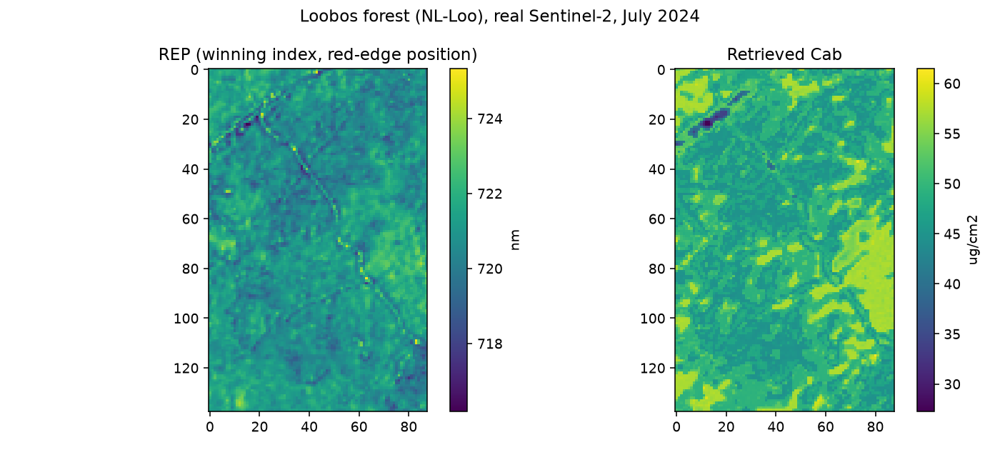
Real output over the real Loobos scene: the winning index (REP, red-edge position, 715-725nm) and the RF-retrieved Cab (26-60 ug/cm2) – both show the same forest gap (dark patch) independently, one a plain spectral index, the other a full hybrid-inversion model.
Full simulate -> indices -> ML-invert pipeline
A complete, actually-executed pipeline (100 samples, spectral indices, scikit-learn trait inversion, real R² 0.7-0.9) lives outside this package as plain scripts + a Jupyter notebook, kept separate from the R scripts:
Scripts/Python/ForPROSAIL_fourSAIL/ — 1_simulate_lut.py →
2_spectral_indices.py → 3_inversion_ml.py, plus pipeline.ipynb.
See Scripts/Python/README.md for how to run it.
What isn’t ported yet
No tutorial-level gaps remain uncovered by the examples above – every R
tutorial series (ToolsRTM, SCOPEinR) has at least one topic-for-topic
Python equivalent on this page now, including both real-Sentinel-2/STAC
capstones. What’s left is the finer-grained, function-level gaps listed
in Known limitations, and each package’s own README.md has the full
R-tutorial-to-Python-module bridge table.